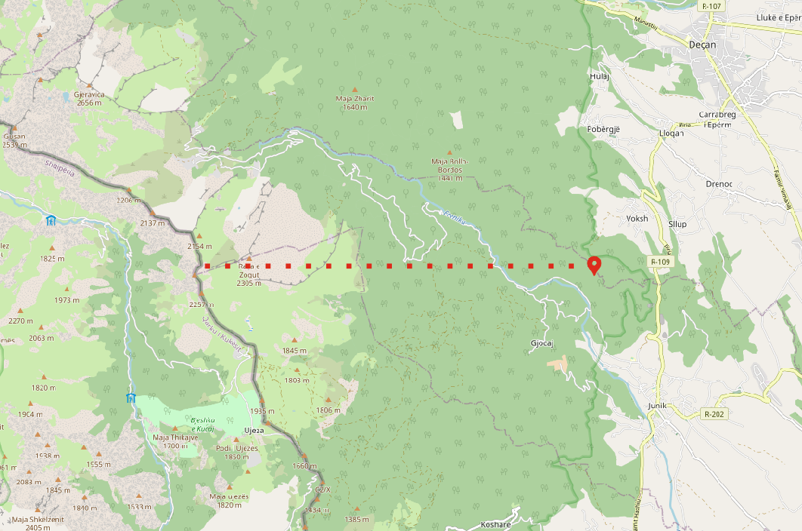

<div class="dialog-container">
  <h1 mat-dialog-title>Confirmation</h1>
  <mat-dialog-content>
    <p *ngIf="data.launchType === 'abort'">
      Are you sure you want to abort Mission?
    </p>
    <p *ngIf="data.launchType != 'abort'">Are you sure you want to proceed with below Flight Path?</p>
    
  </mat-dialog-content>
  <mat-dialog-actions align="center">
    <button mat-button mat-dialog-close>No</button>
    <button
      mat-raised-button
      color="primary"
      cdkFocusInitial
      (click)="onConfirm()"
    >
      Yes
    </button>
  </mat-dialog-actions>
</div>
